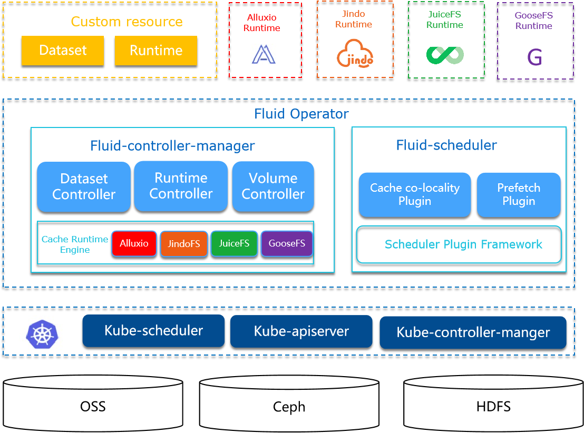
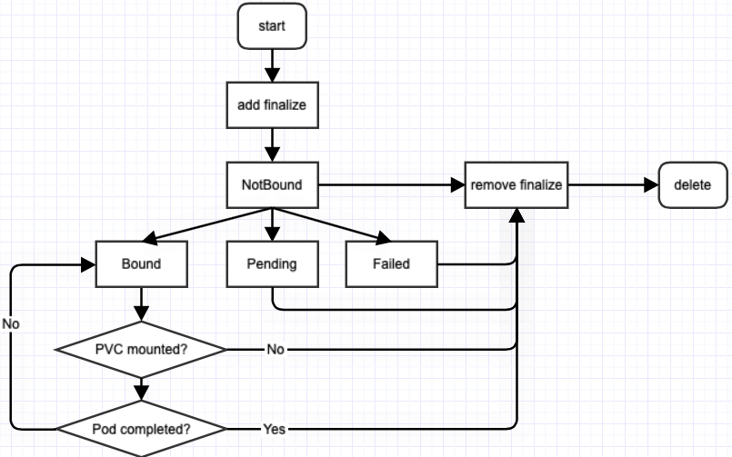

Fluid
Fluid是一个开源的Kubernetes原生的分布式数据集编排和加速引擎，主要服务于云原生场景下的数据密集型应用，例如大数据应用、AI应用等。
场景
主要关注数据集编排和应用编排这两个重要场景
- 数据集编排可以将指定数据集的数据缓存到指定特性的Kubernetes节点；
- 而应用编排将指定该应用调度到可以或已经存储了指定数据集的节点上；
架构

控制器(Fluid-controller-manager)
逻辑上相关的一组数据的集合
调度器(Fluid-scheduler)
支持数据集的管理和加速
原理
原理和流程
- DataSet声明数据集的来源，Runtime选择node打标签由K8s进行worker调度；
- CSI-Plugin作为Deamonset挂载宿主机的
/runtime-mnt，当Pod挂载PVC时，将对应的/runtime-mnt的子目录bind挂载到容器； - APP Pod 获取数据是，会触发宿主机
/runtime-mnt的文件操作，触发FUSE容器通过Alluxio Worker中获取数据； - PVC的数据读取通过CSI-Plugin和FUSE实现，CSI-Plugin 和 FUSE DaemonSet都挂载宿主机的相同目录（/runtime-mnt）；
- FUSE DaemonSet的本地挂载目录为
/runtime-mnt/alluxio/default/demo，后两个为dataset namespace和name； - Alluxio Worker 根据 DataSet 中声明的远程路径，进行数据操作；
- Pod选定Runtime的节点，通过webhook通过节点亲和性进行处理；
Alluxio Runtime会创建**-config存储Alluxio集群的相关配置信息，供FUSE使用；
App Pod 指定 PVC，PV 和 PVC 由对应的 Cache Runtime 创建（通过指定Label（跟DataSet的name/namespace）进行绑定，Annotation判断是否创建）；
- pv的名字由dataset的namespace-name构成；
- pvc的name/namespace 跟 dataset一致；
细节
- Cache Runtime的master/worker的节点选择；
- FUSE 的节点选择；
- 具备CSI插件的节点：通过
Node-Selector: fluid.io/f-default-demo=true -
Pod 和 FUSE 需要在一个节点，CSI将本地的对应的目录挂载到Pod中；
-
FUSE 和 Worker 不需要在一个节点上，根据Runtime的Global字段进行设置？；
Runtime和DataSet是一对一的关系，通过name进行关联！
- Alluxio Runtime worker 挂掉时，其宿主机的缓存(
/dev/shm)不会被清理（？如果Pod飘逸，数据无法删除）
FAQ
Dataset 支持 Spec字段的 update 么？（部分支持，如 AlluxioRuntime 可以在运行时新增 WebUFS）
dataloader中executing阶段，定时20s（很多处）进行更新？
AlluxioRuntime申请的pod（master，worker，fuse）的网络是HostNetWork，意义是啥？（使用宿主机网络，性能）
Runtime创建的PV的大小，常量100Gi？
ObjectMeta的Generation为什么被用来做DataSetController的AddFinalizer的判断？
AssignNodesToCache 没有调用方？（worker 的放置由 k8s的亲和性配置）
- 搜索节点放值worker，现在alluxio的worker通过helm安装的，调度信息在哪里？
- 节点打标签，通过Engine::SyncScheduleInfoToCacheNodes函数设置；
DataSet的亲和性和Pod的亲和性冲突了怎么处理？
- DataSet的亲和性应该保证和Pod一致，即将Pod的节点亲和性配置应用到DataSet中；
数据
DataSet（数据集）
Dataset的生命周期流程如图所示：

Spec
-
mounts：定义来源，支持 https://, http://, local:// 和 pvc:// 等（依据底层的存储）； -
支持多个Mount，会根据名字，建立不同的文件目录；
-
owner：定义用户，设置权限，uid/gid； -
nodeAffinity：缓存的节点亲和性（限制runtime的worker的节点选择）； -
tolerations：pod's tolerations； -
accessModes：Array，"ReadWriteOnce"、"ReadOnlyMany"、"ReadWriteMany" -
runtimes：支持数据集的运行时，如AlluxioRuntimes； -
placement： -
dataRestoreLocation：加载backuped的dataset的路径； -
数据集加载时，将不再从UFS中加载metadata并统计UFS TOTAL SIZE等信息，而是从备份文件中恢复
-
mounts：path字段表示 runtime 的mount路径，如果不指定则为/{name} -
下例中：
alluxio mount fs看到 -
如果指定
path='/'，则 -
如果指定
path='/for'，则
apiVersion: data.fluid.io/v1alpha1
kind: Dataset
metadata:
name: demo
spec:
mounts:
- mountPoint: https://mirrors.bit.edu.cn/apache/spark/
name: spark
---------------------------------------------------------------
apiVersion: v1
kind: Pod
metadata:
name: nginx
labels:
fluid.io/dataset.fusedemo.sched: required
spec:
containers:
- name: nginx
image: nginx
volumeMounts:
- mountPath: /datahbase
name: hbase-vol
volumes:
- name: hbase-vol
persistentVolumeClaim:
claimName: fusedemo
对于nginx pod，其/datahbase下有目录/spark。
Status
Runtimes：Array，支持的运行时- Runtime和DataSet如何绑定上？
Conditions：Array，状态（历史）信息，如Ready、Updating、Initialized等；DataLoadRef：使用该数据集的DataLoad标识，用作锁；（只支持一个DataLoad）DataBackupRef：使用该数据集的DataBackup的标识；
Controller
- DataSet Kind的申请、删除，Finalizer的添加和删除；
- Pod使用DataSet，则不能删除（PVC存在且Pod正在使用）；
- 从
NoneDatasetPhase阶段转换到NotBoundDatasetPhase；
DataLoader（数据预加载）
DataLoader前置：创建DataSet和Runtime，通过创建Runtime的DataLoad Job实现。
Spec
dataset：定义目标数据集，当前只允许在一个名空间下；loadMetadata：数据加载前首先进行元数据同步；target：加载指定的子目录(或文件)，而不是整个数据集，以及副本数；-
path：加载的子目录或文件
-
options：其它属性；
Status
phase：任务的阶段，分为”“， "Pending"，"Executing"，"Complete"，"Failed"；- 正常生命周期：”“ -> "Pending" -> "Executing" -> "Complete"
- Executing 通过 Engine 加载数据集，通过 K8s Job 进行；
Conditions：Array，状态（历史）信息；Duration：加载数据集的时间；
Controller
- DataSetLoader（Finalizer字段）的申请和删除；
- DataSet 获取，DataSet支持的Runtime获取，创建/获取/删除Engine；
- Runtime创建：case 语句，扩展需要改源码；
-
Engine：Dataloader匿名字段，检查Runtime可用（CheckRuntimeReady），目标路径存在（CheckExistenceOfPath），加载数据（LoadData）
-
对DataLoad构建OwnerReference为对应的DataSet，UID为DataSet的UID（Meta）信息；
DataBackup（数据备份）
目前支持两种数据的备份：Alluxio通过alluxio fsadmin backup备份
- 数据集的metadata，包括文件系统metadata（例如文件系统inode tree）等
- 数据集的一些关键统计信息，包括数据量大小和文件数量
Spec
Status
-
phase：任务的阶段，分为”“， "Pending"，"Executing"，"Complete"，"Failed"； -
正常生命周期：”“ -> "Pending" -> "Executing" -> "Complete"
-
Executing 通过 Engine 加载数据集，通过 K8s Job 进行；
Controller
保存metadata（TODO）
Executing阶段
运行时
node 的 labels的创建时机：Sync()函数会定期的进行设置，即使不创建App Pod；
Setup时，创建Worker：
alluxio.node.go中AssignNodesToCache函数（废弃不用），寻找 node 进行 worker的放置（考虑数据集的亲和性）；LabelCacheNode和UnlabelCacheNode：在Sync的时候，对Node设置和取消设置标签；
# 设置数据集个数
fluid.io/dataset-num=1
# runtime label（namespace:default, name: demo)
fluid.io/s-alluxio-default-demo=true
# common label
fluid.io/s-default-demo=true
# 设置存储容量（memory，disk，total）
fluid.io/s-h-alluxio-m-default-demo=2GiB
fluid.io/s-h-alluxio-d-default-demo=1GiB
fluid.io/s-h-alluxio-t-default-demo=3GiB
# 排他性
fluid_exclusive=default_demo
## yaml中会设置这两个值，用作Dataset的排他/共享模式
fluid.io/dataset: {{ .Release.Namespace }}-{{ .Release.Name }}
fluid.io/dataset-placement: {{ .Values.placement }}
AlluxioRuntime
默认20000~25000的端口范围，Master/Worker/Fuse 使用的是 HostNetWork。
Spec
Replicas：Worker的副本数量；FUSE：FUSE的配置，有两个DaemonSet（默认enabled为true，clientEnabled为false）；Global：常量为true，FUSE 以 Global 形式部署（可配置节点亲和性NodeSelector）；NodeSelector：配置的节点亲和性NodeSelector；APIGateway：设置alluxio.proxy.web.port；
Status
MasterPhase：Master的阶段，如Ready；WorkerPhase：Worker的阶段，如Ready；CacheStates：缓存的状态信息
ReconcilerController
- 创建和删除Runtime的Finalizer字段；
- 创建/删除Engine；
Dataset进入Ready状态
-
engine#setup：创建 Master/Worker/Fuse，检查UFS（元数据同步），检查Runtime Ready，绑定到DataSet -
FUSE DaemonSet：将宿主机的/dev/fuse 和 /runtime-mnt/alluxio 挂载到Pod中；
-
Worker：将宿主机的 /dev/shm/ 挂载在Pod中（用于mount）；
-
engine#CreateVolume：创建Fuse PV / PVC，创建HCFS PV； -
通过Annotation确定PV是Fluid创建；
Name: default-demo
# 定制的label 和 Annotations
Labels: fluid.io/s-default-demo=true
Annotations: CreatedBy: fluid
pv.kubernetes.io/bound-by-controller: yes
Finalizers: [kubernetes.io/pv-protection]
StorageClass: fluid
Status: Bound
Claim: default/demo
Reclaim Policy: Retain
Access Modes: ROX
VolumeMode: Filesystem
Capacity: 100Gi
Node Affinity: <none>
Message:
Source:
Type: CSI (a Container Storage Interface (CSI) volume source)
Driver: fuse.csi.fluid.io
FSType:
VolumeHandle: default-demo
ReadOnly: false
# 挂载的路径，在FUSE的pod中
VolumeAttributes: fluid_path=/runtime-mnt/alluxio/default/demo/alluxio-fuse
mount_type=fuse.alluxio-fuse
Events: <none>
engine#Sync：元数据同步
Runtime包含Delete时间戳：
- engine#DeleteVolume：
- engine#Shutdown：
Engine
每一个namespace:name都会生成一个Engine，进行处理
生命周期：
-
创建：setup -> CreateVolume -> Sync（进行node label）
-
删除：DeleteVolume -> Shutdown
engine#setup：创建 Master/Worker的StatefulSet，FUSE的 DaemonSet，检查UFS（同步元数据），检查Runtime Ready，绑定到DataSet
-
元数据（通过alluxio master的alluxio fs命令）：文件总数，文件总大小
-
DataSet 阶段设为
BoundDatasetPhase，状态设为DatasetReady； -
FUSE Pod如何创建的：
-
DaemonSet申请：NodeSelector 满足fluid.io/f-{ns}-{ds_name}= "true" - CSI NodeStageVolume里设置该值；
对于不同类型的Mount如何处理：
-
Local和PVC转换为UFSPaths 和 UFSVolumes，挂载到Runtime的Master/Worker Pod中"/underFSStorage"，即Alluxio root ufs；
-
master/worker 的yaml 会自动添加 volumeMount 合 volume 信息；
-
HTTP等形式通过在MasterPod中执行
alluxio fs mount； -
在 Engine 的 PrepareUFS 的 mountUFS 函数内执行命令
RuntimePortAllocator
运行时端口分配（portallocator包）
FluidApp
用作关闭 FUSE sidecar（针对 serverless 场景），当 主 Pod完成后，sidecar 的Pod 应该同样结束
- Pod 需要有标签，
fuse.serverful.fluid.io/inject=true
作为 Serverless 集群的Controller，Pod Fuse Sidecar的状态判断。
- Update的Watch Filter，过滤Pod是否需要调谐；
- 调谐：进行umount操作；
Webhook
Fluid 默认安装webhook的Deployment，对Pods的create/update进行回调，进行FUSE sidecar的注入/Pod的亲和性调度。
Controller
- Patch 证书到
MutatingWebhookConfiguration
main.go：注册CreateUpdatePodForSchedulingHandler，针对 声明 DataSet 的 Pod (根据Pod绑定的PVC的label判断)
- 通过WebhookServer注册Handler
Registered webhook handler {"path": "/mutate-fluid-io-v1alpha1-schedulepod"}
-
如果是 serverlesss 模式，则进行 FUSE 容器注入；
-
将 PVC 的 volume 替换成Fuse容器的路径；
-
如果不是 serverless 模式，则进行
NodeAffinityWithCache，PreferNodesWithCache，MountPropagationInjector； -
NodeAffinityWithCache：fuse的global 和 selector的注入Pod； PreferNodesWithCache：pod的节点亲和性调度设置，调度到具备commonLabel（fluid.io/s-default-demo=true）的节点；MountPropagationInjector：pod进行MountPropagation配置为HostToContainer
CSI
Serverless 模式下，不触发 CSI::NodeStageVolume，因为会将 PVC 的 volume 重写为 hostPath；
配置 FuseRecovery，FUSE 的自动恢复；
选择fluid.io/s-default-fusedemo: "true"的Volume绑定；
- fuse pod 创建见
NodeStageVolume阶段；
配置 Fluid Driver，进行自定义存储驱动；
-
Unix Sock：
unix:///var/lib/kubelet/csi-plugins/fuse.csi.fluid.io/csi.sock -
CSI Driver DaemonSet 挂载宿主机的
/runtime目录；
# 将alluxio的目录，挂载到pod中，对 pod 该路径的读写，触发 fuse 操作，进而跟 Alluxio 通信
# fuse daemonset 将 hostpah 的 /runtime-mnt/alluxio/default/demo/ 挂载到容器
/bin/mount --bind -o ro /runtime-mnt/alluxio/default/demo/alluxio-fuse /var/lib/kubelet/pods/9b5bdfd5-7510-4d50-9246-8f7ebce12a80/volumes/kubernetes.io~csi/default-demo/mount
NodeStageVolume阶段：
- Pod 使用 Dataset Volume 时，CSI 插件执行到该阶段，表明 Pod 调度在该节点；
- 设置
fluid.io/f-default-demo=true标签，即节点上具备该CSI插件，供FUSE使用（此时Fuse daemonset满足调度条件，才会进行调度）；
NodePublishVolume阶段：
- 将 fluid fuse path 挂载到 pod 的目录中；
NodePublishVolumeRequest is volume_id:"default-phy"
staging_target_path:"/var/lib/kubelet/plugins/kubernetes.io/csi/pv/refdemo-ai-education/globalmount"
target_path:"/var/lib/kubelet/pods/63403007-a2d6-49ae-a9b4-92988e58427b/volumes/kubernetes.io~csi/refdemo-ai-education/mount" volume_capability:<mount:<> access_mode:<mode:MULTI_NODE_READER_ONLY > >
volume_context:<key:"csi.storage.k8s.io/ephemeral" value:"false" >
volume_context:<key:"csi.storage.k8s.io/pod.name" value:"nginx" >
volume_context:<key:"csi.storage.k8s.io/pod.namespace" value:"ai-education" >
volume_context:<key:"csi.storage.k8s.io/pod.uid" value:"63403007-a2d6-49ae-a9b4-92988e58427b" >
volume_context:<key:"csi.storage.k8s.io/serviceAccount.name" value:"default" >
volume_context:<key:"fluid_path" value:"/runtime-mnt/alluxio/default/phy/alluxio-fuse" >
volume_context:<key:"mount_type" value:"fuse.alluxio-fuse" >
volume_context:<key:"runtime_name" value:"phy" >
volume_context:<key:"runtime_namespace" value:"default" >
使用
DataSet
定义 DataSet
apiVersion: data.fluid.io/v1alpha1
kind: Dataset
metadata:
name: hbase
spec:
mounts:
- mountPoint: https://mirrors.tuna.tsinghua.edu.cn/apache/hbase/stable/
name: hbase
定义 Runtime
metadata的name字段需要跟DataSet的metadata的name字段相同；
apiVersion: data.fluid.io/v1alpha1
kind: AlluxioRuntime
metadata:
name: hbase
spec:
replicas: 2
tieredstore:
levels:
- mediumtype: MEM
path: /dev/shm
quota: 2Gi
high: "0.95"
low: "0.7"
定义 App
apiVersion: v1
kind: Pod
metadata:
name: nginx
spec:
containers:
- name: nginx
image: nginx
volumeMounts:
- mountPath: /data
name: hbase-vol
volumes:
- name: hbase-vol
persistentVolumeClaim:
claimName: hbase
Backup
定义Backup
apiVersion: data.fluid.io/v1alpha1
kind: DataBackup
metadata:
name: hbase-backup
spec:
dataset: hbase
backupPath: pvc://<pvcName>/subpath1/subpath2/